Professional Skills - Personal Website
Project Organisation
For my website I chose a mixture of Y2K popular in the early 2010s, blended with a oceanic blue theme which immerses the user in a short story while scrolling. My website speaks for the person I am, not by telling you about my favourite pop-culture - at least not directly. My artistic preferences revolve around news paper-like cutouts which, when combined, reveal their intricate stories. (Or at least I try to) That's why I went for this blend of Y2k aestetic and calming oceanic elements. I found a way to express myself through this style, and by staying thue to myself I allowed the creation of this website to become an actual activity I was looking forward to.
For this project I was greatly inflenced by the blend of Worldwide Culture which I obsurved through my lenses as a native Bulgarian, diging into the world I've been so familiar with until now, and trying to interpret it and express it through any means I find suitable. My story is hidden in both visual and audible ones, with some of my "artworks" which will soon be displayed in a "Gallery" section on this website.
I dug and drew inspiration from websites I felt like excited me and so these are the most important ones, that brought the website to life:
 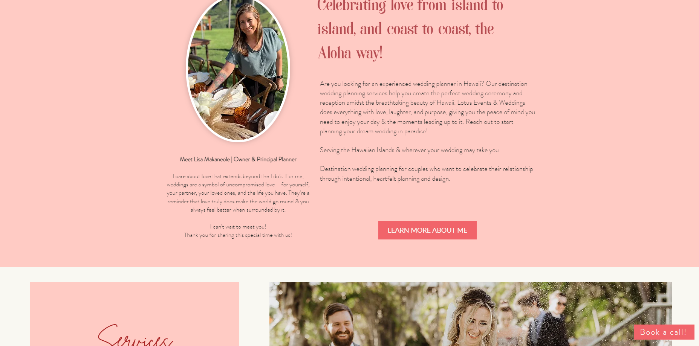
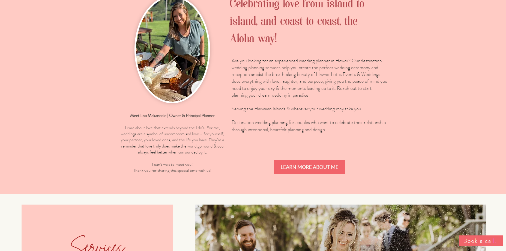
I really like the layout and feeling of this website and the feeling of calmness it brings. One of my biggest inspirations for the choices and layout of the website as you can see in the video and layout similarities.

 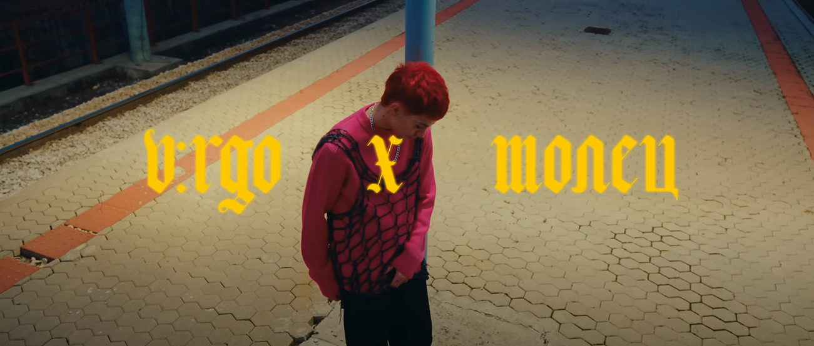 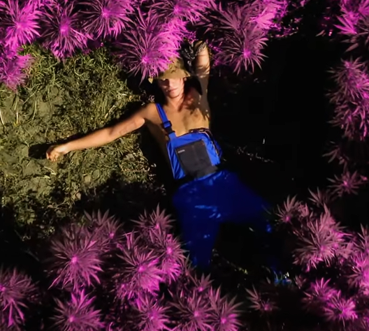
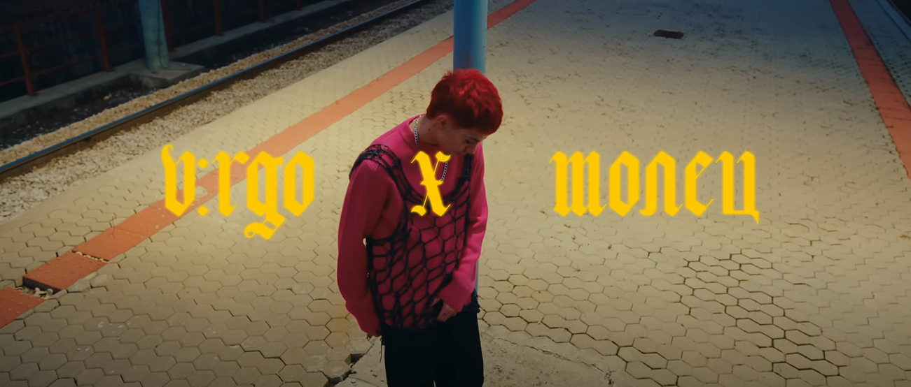 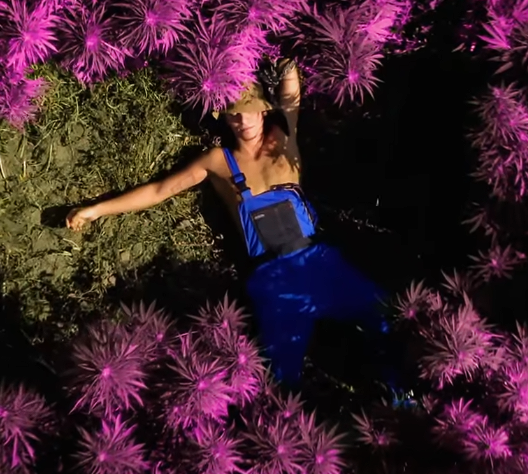
It even allowed me to experiment with the background and add these cuts I made from a music video that inspired me further to head in this direction, with it being from a prominent Bulgarian artist named Virgo, influencial for our music scene because of his genre bending sound. By furthering my expression through familiarity I was able to be even more creative with the website's development down the road.


Another two big contibutions to the shaping of my idea for the website were 555soul clothing website with a really interesting blend of old school and y2k elements, as well as Go!Club, music group from Bulgaria with pastel-like Y2k elements in both their music and visuals.
Communication & reporting
I've shared my ideas and visions for ym website multiple times, with teachers and with students alike. I'd say that after considering feedback, the design was always changing for the better.
Early pitches:


With Each feedback the pitches got better and better and by going back to the foundations - the structure - and ensuring those are solid, I managed to improve, because I was seeking feedback and adressing what was going good where I was not as efficient - I was actively looking how to improve:
Latest pitches:
 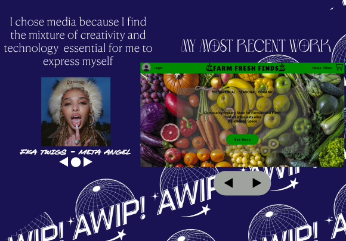 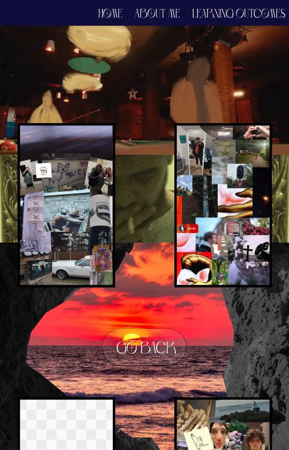 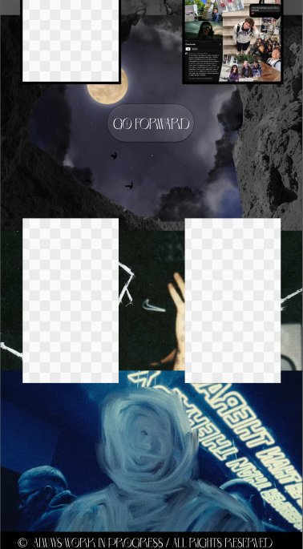 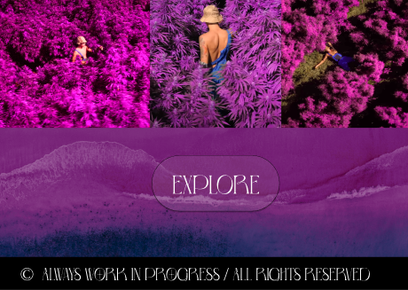
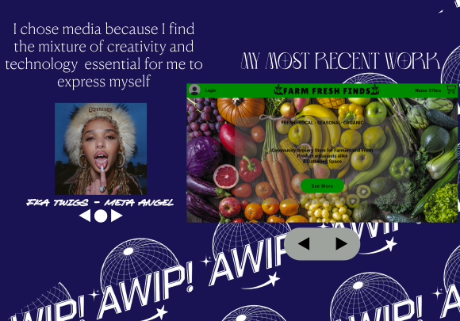 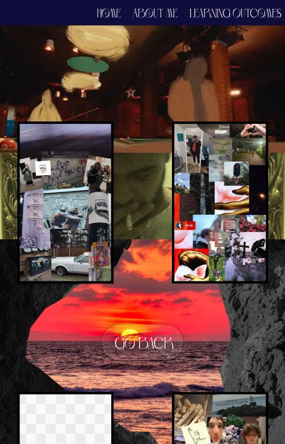 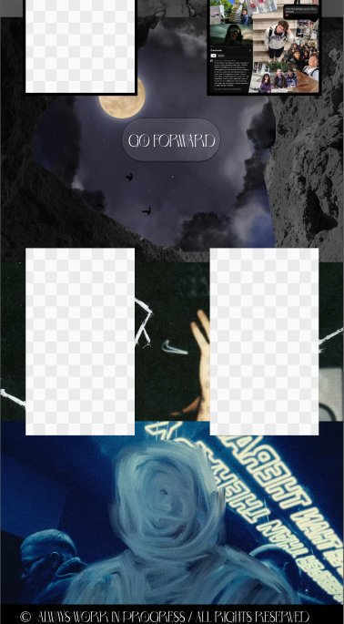 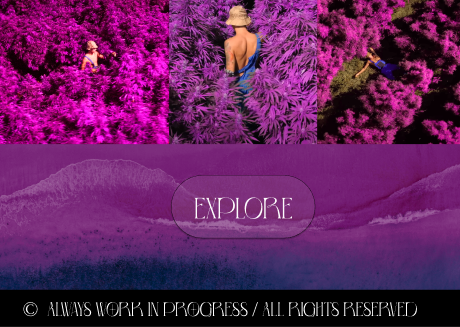
Exploratory Research
Feedback and Reflection
Core values
add more soon